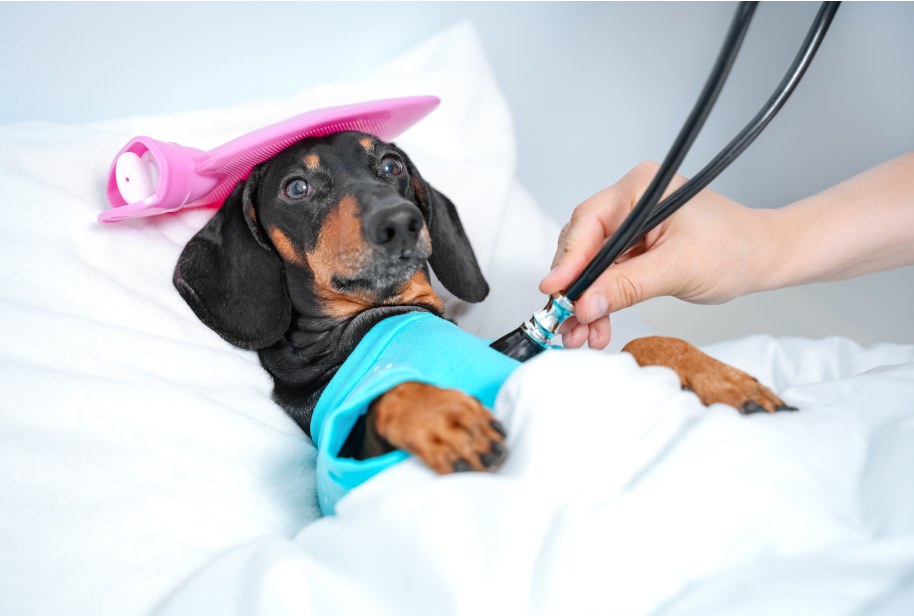
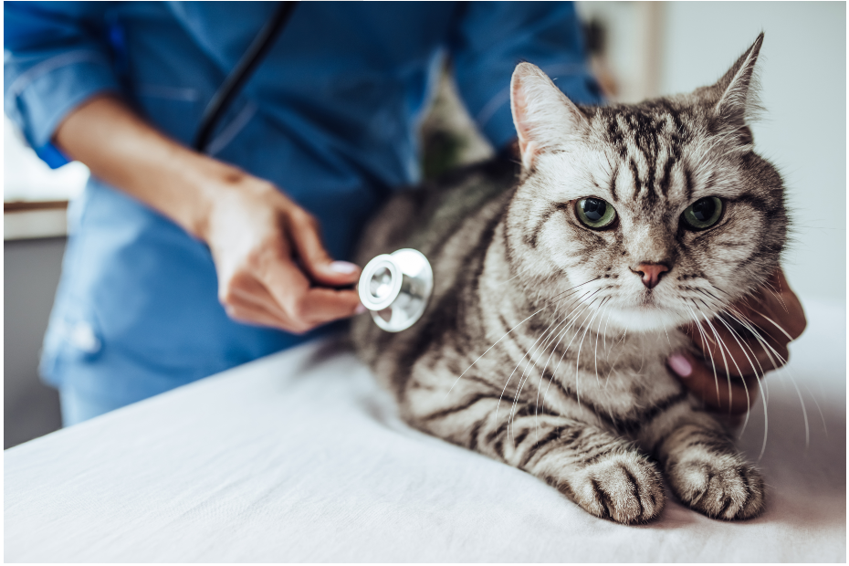
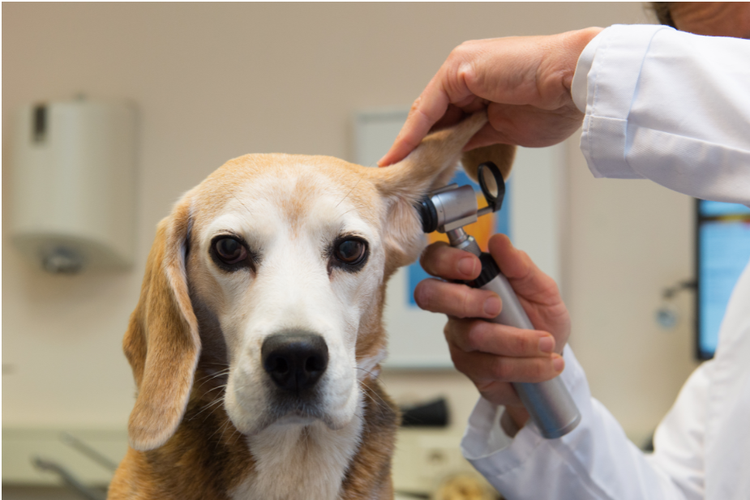

Preventative Care
We offer a range of preventative care services to ensure your pets stay healthy and happy. Our services include vaccinations, wellness exams, dental care, and nutritional counseling. Regular check-ups are crucial in detecting and preventing health issues early.
Emergency Care
Our clinic is equipped to handle emergency situations. We understand that emergencies can be stressful, and our experienced team is ready to provide immediate care for your pets in urgent situations. We are open 24/7 for emergencies.
Surgical Services
We provide a variety of surgical services, from routine spaying and neutering to more complex procedures. Our veterinarians use state-of-the-art equipment and follow the highest standards of care to ensure the best outcomes for your pets.
Announcements
- 15% discount on your pet's first visit when you book through our online booking form!
- Join us for a Dog Play Date on Saturday 4th August , starting at 9 Am*
- Enjoy a 10% discount on your Annual Wellness Check-Up at Cairnsville Veterinary Care during themonth of April*
* Annual Wellness Check-Up package includes the following services
- Physical Examination: A thorough examination of your pet's overall health, including checking for any signs of illness, abnormalities, or discomfort.
- Vaccinations: Ensuring that your pet's vaccinations are up-to-date based on their age, health status, and lifestyle
- Parasite Control: Assessment and preventive measures against common parasites like fleas, ticks, and worms
- Dental Check-Up: Evaluation of your pet's dental health, including checking for signs of dental disease and providing advice on dental care. Nutritional Guidance: Discussion about your pet's diet, nutritional needs, and recommendations for maintaining a healthy weight
- Blood Tests or Laboratory Work (if necessary): Additional diagnostic tests may be recommended based on your pet's age, breed, or specific health concerns
Dog Play Date!
Get ready for a tail-wagging good time! Cairnsville Veterinary Care is excited to announce a Dog Play Date on the first Saturday of August. Join us for a fun-filled gathering where your furry friends can socialise, play, and make new pals.
Event details
- Date: Saturday 4th August
- Time: Starting at 9 am
- Location: Cairnsville Veterinary Care
What to expect
- Engaging activities for dogs of all sizes
- Supervised play environment
- Opportunities for socialisation and making new friends – human and animal
- Get to know your local veterinary staff
Don't miss out on this pawsitively delightful event! Mark your calendars and let your dogs enjoy a fantastic play date at Cairnsville Veterinary Care.